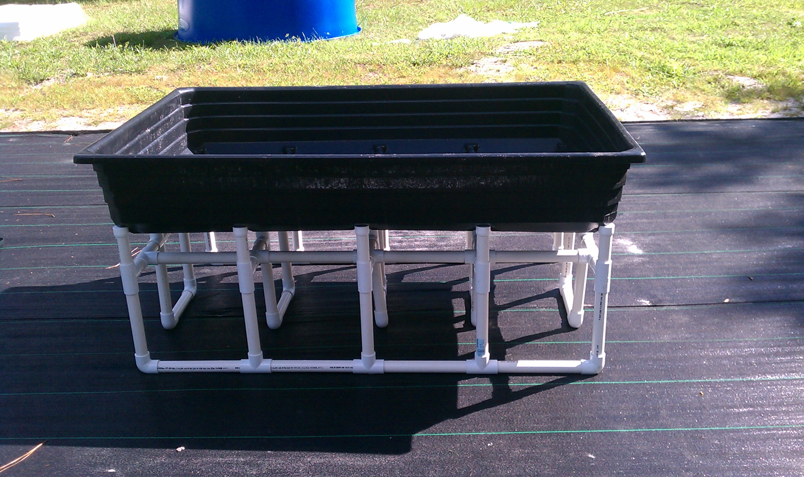

Para a montagem do sistema de aquaponia, é importante que a estrutura de sustentação seja bem planejada.

Cama de Cultivo: A base elevada do sistema.Muitos serão os erros na construção do sistema. Entretanto, alguns são muito comuns e podem ser evitados.
O primeiro deles diz respeito ao desnível entre o tanque de peixes, filtros e camas de cultivo.
 Esquema de Desnível: Planejamento para o fluxo contínuo.
Esquema de Desnível: Planejamento para o fluxo contínuo.
O desnível, ou diferença de altura, é fundamental para que a água circule. A circulação ocorre devido à gravidade, que por todo o sistema, fará com que a água sempre desça.
Inicialmente, temos o tanque de peixes, de onde a água sairá, preferencialmente, pela parte de cima.
 Tanque de peixes: Ponto de partida do ciclo.
Tanque de peixes: Ponto de partida do ciclo.
É importante que não tenhamos a saída da água pela parte de baixo, pois um eventual vazamento na flange (conector do cano externo) pode esvaziar a caixa, matando os peixes.
Um filtro ciclone seria a segunda etapa, e estaria abaixo do tanque de peixes. Repare que estar abaixo significa que o nível da água do filtro ciclone deve estar sempre abaixo do nível da água do tanque de peixes, para que, com esse desnível, a água sempre queira encher o filtro, esvaziando o tanque.
 Filtro Ciclone: Posicionado estrategicamente para receber a água por gravidade.
Filtro Ciclone: Posicionado estrategicamente para receber a água por gravidade.
Bombas e Equipamentos para Circulação


Do filtro ciclone, a água iria também por gravidade para o filtro biológico, cujo nível estaria um pouco abaixo do nível do filtro ciclone (e por tabela, abaixo do tanque de peixes também).
No filtro biológico, teríamos a bomba d'água, impulsionando a água para cima, onde estão as camas de cultivo. Repare que o nível mais baixo, nesse sistema, é o do filtro biológico. As camas de cultivo estão no nível mais alto.
Das camas de cultivo, a água retorna para o nível intermediário, que é o tanque de peixes.
Para complementar a nutrição e filtragem do seu sistema, conheça também o papel das Lemnas ou Lentilhas d'água, que ajudam no equilíbrio biológico.